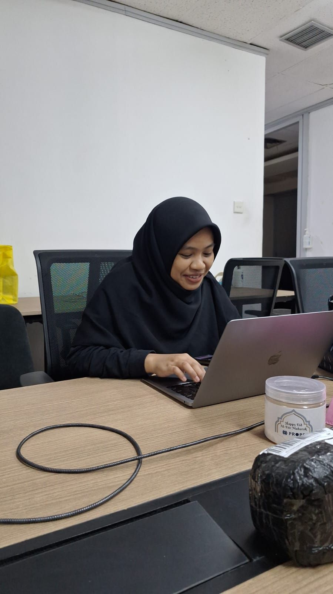
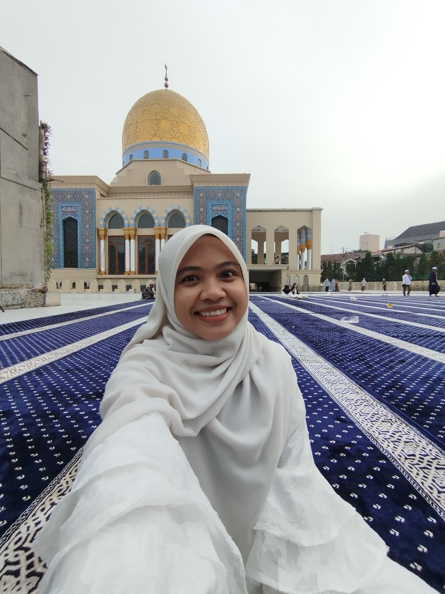
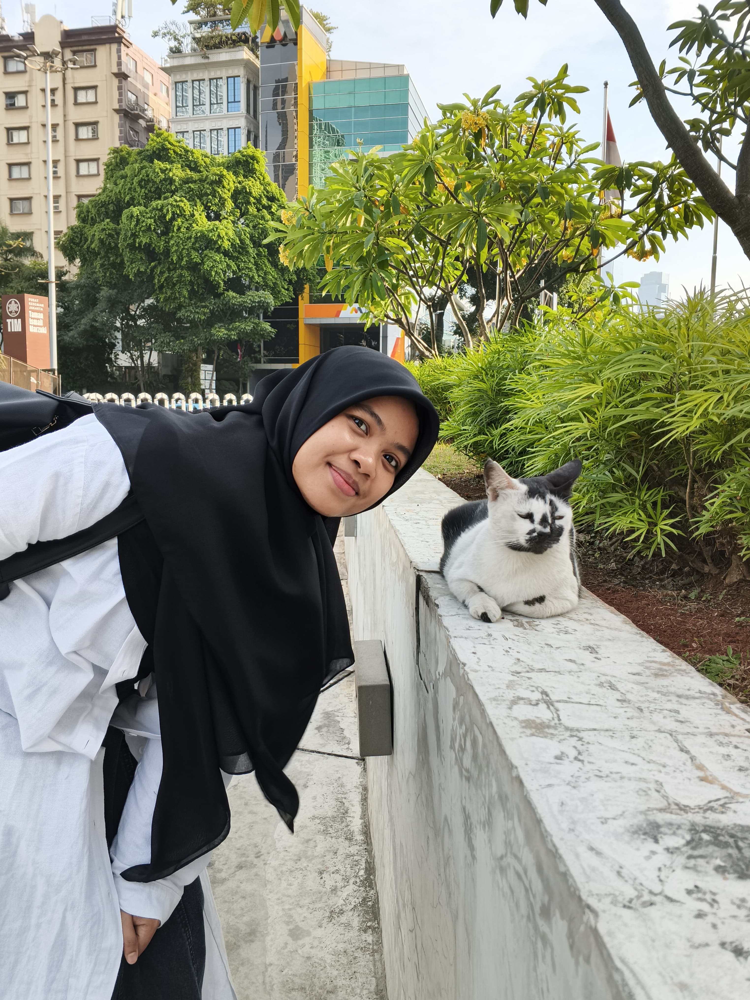

Engineer · product · content
Halo, gue Ayu — software engineer di NOICE yang kebablasan sayang sama produknya sendiri: ngoding iya, riset user iya, bikin konten & jadi talent-nya juga iya, sampai ngobrol partnership pun iya.


Produk AI yang motongin konten panjang jadi klip siap post. Gue pegang semuanya — arsitektur, roadmap, konten, growth — dan semua usernya dateng tanpa sepeser pun budget ads.
Podcaster & creator butuh klip pendek buat distribusi, tapi motongin manual itu makan waktu. Gue prototype workflow otomatis pakai n8n — awalnya cuma eksperimen pribadi.
↳ eksperimen ini akhirnya diadopsi jadi produk resmi NOICE
AI pipeline, arsitektur, sampai UI — dirakit sendiri. Launch pertama langsung dapet 136 user aktif, murni organik.
Gue bikin konten KlipKlip sendiri (iya, sekalian jadi talent-nya), interview user langsung, dan pakai funnel analysis Mixpanel buat nemuin titik drop-off yang paling penting buat dibenahin.
Sekarang hampir 500 user dan udah sampai tahap obrolan investor — yang akhirnya jadi pelajaran menarik soal struktur bisnis & white-label. Cerita panjangnya seru, tanyain aja kalau ketemu.
↳ target berikutnya: terus scale, tetap organik dulu
Kok bisa dikerjain sendirian? Karena gue nggak sendirian — gue kerja bareng AI. Vibe coding biar bisa ship cepet, AI pipeline di dalam produknya, dan sisanya: kepo yang nggak ada habisnya.
React/Next.js, AI pipeline, automation (n8n), analytics implementation. Dibangun bareng AI — vibe coding biar satu orang bisa gerak secepat satu tim.
User research, funnel analysis (Mixpanel, GA4), prioritisasi roadmap, GTM strategy, sampai partnership & obrolan investor.
Konten TikTok & sosial buat KlipKlip — ditulis, direkam, dan dibintangi sendiri. Karena produk bagus juga butuh cerita yang bagus.
Bikin konten itu bukan side quest — itu cara gue riset user, growth channel utama KlipKlip, dan tempat gue cerita soal upcycling & barang secondhand.

Sekarang di NOICE, platform podcast & audio terbesar di Indonesia — ngerjain apapun yang produknya butuhin: kode, data, konten, atau sekadar nanya "sebenernya user kita butuh apa sih?"
→ transforming discarded things into something new, itu benang merahnya.